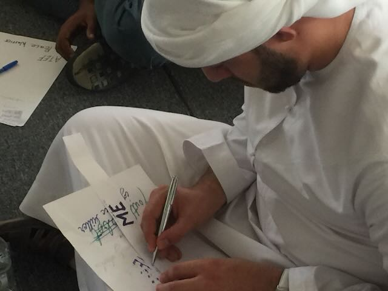
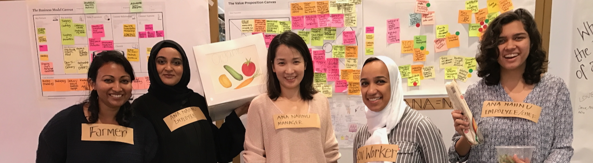

IN WORKSHOP BRIEF
No lectures.
Every workshop is built on conversation and making — guided by questions you respond to, rather than answer.
Workshops for groups and organisations · 2026
What a ME=WE workshop is
Not explained. Lived.
Your growth and the wellbeing of the people beside you are not two separate things. We call this MEWE.
An immersive, interactive workshop that gets you out of the audience and into the middle of your own life. Head, heart and hands in one room.
Conversation
Making by hand
Artistic expression
Ends in one action
THE ME=WE ARC
Six movements, walked together
01 Ignite
Something wakes up — curiosity, your own strength, the sense that change is possible.
02 ME ≠ WE
Still inside my own frame.
03 ME + WE
You start to notice your choices rippling outward.
04 ( ME WE )THE FLIP
Connected, facing something as one unit. This is the flip.
05 ME = WE
When I move, the field of relationships moves with me.
06 Glow
The shift becomes warmth, carried back into everyday life.
Every session ends with each person naming one small, deliberate action to try.
THE MENU
One pattern, many shapes.
Core
Möbius Making
For everyone · from 3 hours
Facilitators
Pathfinder
A series · online
Organisations
Metanoia
1–4 days · packages
Youth
Jungle Jam
Two-day residential
Parents · families
Two Wings
A series of sessions
Junior youth · youth
Second Life
Short session series
For everyone
Hero’s Journey
A guided journey
Youth · residential
Shadow Shifter
Two days · nine tasks
Everyone · half day
ME=WE Bucket List
Get clear, then act
Women
Women’s Retreat
Details soon
01 · Core workshop · start here
Möbius Making
Make a Möbius strip with your own hands and discover that ME and WE were never two sides.
The first encounter with ME=WE as something alive rather than explained. It helps when a team feels stuck, when conversation flows but connection stays shallow, or when a group is preparing for its next step.
Duration
3 hours · half–full day
Group
12–15 people
Format
In person · hands-on


02 · For organisations
Metanoia
Change from the inside.
Surface the assumptions an organisation is holding, sense what wants to be born, and commit — together — to a path of growth. An intensive for people whose inner state shapes a community: educators, directors, anyone who opens space for others.
Duration
1–4 days · packages
Group
One team or unit
Format
In person · facilitated
03 · Youth · two-day residential
Jungle Jam
Leave the everyday for a place that does not exist. Come back holding your own shape.
Games, drawing, movement, storytelling, role play. Not a curriculum — a place to put down the daily pressure and look at yourself honestly, beside others doing the same.
Who
Ages 16–26 · 15–25 people
Duration
Two days, staying together
Space
A room you can draw on

04 · 05 · For families and young people
Roots, wings, and the basics.
Parents · couples · families
Two Wings
For parents learning to hold roots and wings at once — steadying the family field while the next generation takes flight. Can be adapted for a whole neighbourhood.
8–14 parents
A series of sessions
In person
Junior youth · youth
Second Life Series
Self-care as the first practice — movement, sleep, food and stillness. The four ordinary things that decide most of a day, practised together rather than explained. Co-created with Taejin Kim and Vahid Buehrer.
Small groups
Short session series
Practice between sessions
FORMAT & SETUP
Every run is deliberately different.
Length, language, group size, and the balance of drawing, movement and conversation are agreed in advance. Tell us who is coming and what they carry, and we build the version that fits.
Group
12–15 as standard
Residentials take 15–25; organisational work runs by team.
Time
3 hours to 4 days
Half day, full day, two-day residential, or a series.
Space
A room you can move in
Chairs that move, walls you can stick and draw on. We bring the materials.
Language
EN · 한 · 繁
Local IN-Collectives run it in their own language.
You leave with
One thing you made with your hands, and one small action you named out loud.

Case · Dubai, March 2022
Jungle Jam — what happened over two days.
01
Games that turn strangers into a group faster than conversation can.
02
A whole wall — light, shadow and shift, drawn big and in colour.
03
Role play and tableau — trying on the self that acts.
04
A circle where the room hears one person’s real difficulty.
05
One action to take home — named aloud in front of the circle.
Facilitated by Yunsun Chung-Shin & Irene Pavlos, with a local partner organisation.
WHAT PARTICIPANTS SAY
“Maybe we were already connected.”
We promise no dramatic transformation. But many people leave the room saying this.
WHO FACILITATES
These people open the room.
ME=WE workshops are opened by practitioners of the IN-Collective. Every run brings assistants and co-facilitators into the room alongside them.

Yunsun Chung

Joanne Renaux

Irene Pavlos

Taejin Kim

Vahid Buehrer

Saurav Dhakal

Tony Huyuhua
BOOK A WORKSHOP
Bring one to your group.
01
Get in touch
Tell us who is coming and what they carry.
02
We design it together
Length, language, group size and balance, agreed in advance.
03
We meet in the room
We bring the materials, you bring the space.
www.innoco.co · hello@innoco.co · Seoul, Korea
© 2016–2026 IN (INNOCO). All rights reserved.
ME=WE is shared under Creative Commons.
ME=WE is shared under Creative Commons.